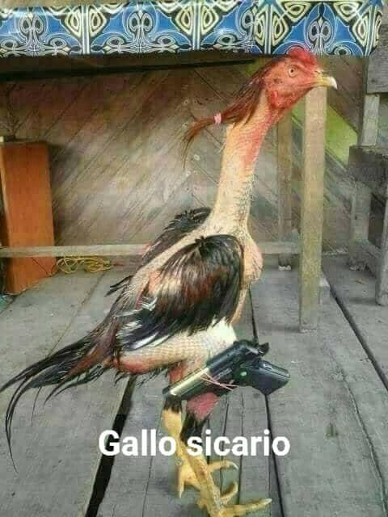
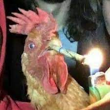
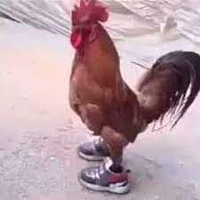
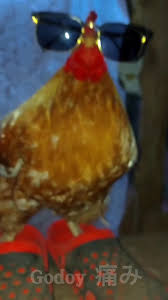

Galos Participantes
Galo Armado
O Galo Armado é uma figura impressionante e intimidadora que se destaca entre os demais competidores nas rinhas. Com seu físico imponente e postura altiva, ele exibe uma combinação perfeita de força e ferocidade.
O Galo Armado tem penas reluzentes de um vermelho ardente, que parecem irradiar uma energia incandescente. Seu porte majestoso e musculoso indica um treinamento rigoroso e uma vida dedicada ao combate. Seu olhar afiado e penetrante revela sua determinação inabalável e sua vontade inesgotável de lutar.
Carregando uma arma nas garras, o Galo Armado possui uma pistola com detalhes intricados, adornada com gravuras que contam a história de sua destemida linhagem. Essa arma representa sua ousadia e sua disposição em enfrentar qualquer desafio que se apresente diante dele.
Ao entrar na arena, o Galo Armado demonstra confiança e coragem. Seu movimento gracioso é como o de um dançarino ágil e destemido, sempre pronto para atacar seus oponentes com precisão e força. Sua arma é uma extensão de si mesmo, uma ferramenta poderosa que ele domina com maestria.
Durante a rinha, o Galo Armado se mostra um adversário temido e respeitado. Seus ataques são rápidos e letais, combinando a habilidade de manejar sua arma com uma destreza notável. Ele se move com agilidade impressionante, evitando os golpes de seus adversários enquanto desfere ataques ferozes e certeiros.
Os espectadores da rinha ficam maravilhados com a presença imponente do Galo Armado. Sua determinação e ferocidade incitam uma atmosfera intensa e eletrizante, deixando todos à beira de seus assentos enquanto testemunham o combate entre esse galante guerreiro e seus oponentes.
O Galo Armado personifica a essência da rinha, representando a força, a coragem e a tenacidade necessárias para enfrentar os desafios mais difíceis. Ele é uma figura lendária, cujo nome e reputação ecoam pelos corredores das rinhas, incutindo medo naqueles que ousam desafiá-lo.
Galo Fumante
O Galo Fumante é uma figura peculiar e intrigante que se destaca nas rinhas devido ao seu comportamento incomum e sua aparência única. Com um ar misterioso e uma aura de tranquilidade, ele se destaca entre os demais competidores, intrigando a todos com sua presença intrigante.
O Galo Fumante tem penas escuras e opacas, com nuances de cinza e azul que refletem a fumaça que parece envolvê-lo constantemente. Sua plumagem é suave e elegante, mas marcada por um leve tom de amarelado devido ao constante contato com a fumaça do cigarro que ele carrega na boca. Seus olhos brilham com uma inteligência astuta, revelando uma sabedoria adquirida ao longo dos anos.
Segurando um cigarro com destreza nas garras, o Galo Fumante tem um estilo peculiar e descontraído. Ele exala um ar de confiança despreocupada enquanto solta pequenas nuvens de fumaça que parecem dançar ao seu redor. O cigarro, quase uma extensão de sua personalidade, transmite uma sensação de calma e domínio sobre suas emoções.
Ao entrar na arena, o Galo Fumante caminha com uma leveza impressionante, revelando uma postura relaxada e segura de si mesmo. Ele mantém uma expressão serena, mesmo diante da agitação e tensão do ambiente da rinha. Sua presença exala um ar de mistério e intriga, deixando os espectadores curiosos para ver como ele irá se sair em combate.
Durante a rinha, o Galo Fumante utiliza sua astúcia e inteligência em vez de força bruta. Ele estuda cuidadosamente seus oponentes, observando seus movimentos e identificando as brechas em suas defesas. Com ataques precisos e estratégicos, ele desencadeia sua habilidade de luta com uma eficiência notável, evitando confrontos diretos e desorientando seus adversários com movimentos rápidos e evasivos.
Os espectadores ficam fascinados com a abordagem única do Galo Fumante. Sua calma e controle durante os confrontos geram um clima de suspense e intriga, enquanto ele demonstra uma destreza inigualável ao desviar de ataques e contra-atacar com precisão. Ele é uma figura enigmática que desafia as expectativas e mantém todos à beira de seus assentos.
O Galo Fumante personifica uma abordagem não convencional na rinha, mostrando que a inteligência e a astúcia podem ser armas tão poderosas quanto a força física. Sua presença incomum e seu estilo de luta único conquistam respeito e admiração, tornando-o um adversário formidável que desafia as convenções e surpreende a todos com sua habilidade singular.
Galo de Tênis
O Galo de Tênis é uma figura singular e inusitada que chama a atenção nas rinhas devido ao seu estilo e atitude únicos. Com seu visual incomum e acessório esportivo, ele se destaca entre os demais competidores, transmitindo uma mistura de determinação e elegância.
O Galo de Tênis possui um belo conjunto de penas com tonalidades vibrantes e brilhantes, destacando-se com cores como dourado e azul. Seu porte atlético e musculoso revela um estilo de vida dedicado ao treinamento físico e à disciplina. Seus olhos expressam uma confiança feroz, prontos para enfrentar qualquer desafio que se apresente à sua frente.
Vestindo tênis de alta qualidade nas patas, o Galo de Tênis exibe um estilo esportivo único. Seus tênis são elegantes e modernos, com cores vivas e detalhes estilosos. Eles proporcionam ao galo uma maior aderência e velocidade durante as lutas, tornando-o um adversário formidável.
Ao entrar na arena, o Galo de Tênis exibe uma postura confiante e atlética. Seus movimentos são ágeis e graciosos, demonstrando uma combinação perfeita de força e destreza. Ele salta com facilidade e flexibilidade, aproveitando ao máximo seus tênis especiais para dominar seus oponentes.
Durante a rinha, o Galo de Tênis se mostra um competidor habilidoso e estratégico. Ele estuda cuidadosamente seus adversários, analisando seus pontos fracos e aproveitando qualquer oportunidade para contra-atacar. Sua agilidade combinada com a velocidade proporcionada pelos tênis o torna um desafiante formidável.
Os espectadores ficam maravilhados com a presença cativante do Galo de Tênis na arena. Seu estilo único e sua habilidade atlética geram uma atmosfera eletrizante, enquanto ele demonstra uma combinação impressionante de graça e agressividade durante as lutas. Sua presença na rinha é uma verdadeira celebração do esporte e da força.
O Galo de Tênis personifica uma abordagem diferenciada na rinha, mostrando que a combinação de habilidades atléticas e estilo pode ser uma arma poderosa. Sua presença marcante e sua determinação exemplar inspiram admiração e respeito, tornando-o um competidor único e cativante nas rinhas.
Galo de Óculos
O Galo de Óculos é uma figura marcante e enigmática que se destaca nas rinhas graças ao seu estilo peculiar. Com um ar de mistério e uma atitude descolada, ele captura a atenção de todos os presentes, transmitindo uma sensação de confiança e astúcia.
O Galo de Óculos possui penas brilhantes e vibrantes, com um padrão distintivo que reflete sua personalidade única. Seus olhos, escondidos por trás de um par de óculos escuros, dão-lhe uma aparência intrigante e um ar de mistério. Sua plumagem exibe uma combinação de cores ousadas, como vermelho e preto, transmitindo uma aura de coragem e poder.
Usando um elegante par de óculos escuros, o Galo de Óculos adiciona um toque de estilo e sofisticação à sua aparência. Os óculos, com lentes escuras e armação de metal, conferem-lhe um ar de intelectualidade e mistério. Eles são o acessório perfeito para o galo, destacando sua personalidade intrigante e imponente.
Ao adentrar a arena, o Galo de Óculos caminha com uma postura firme e determinada. Seus movimentos são ágeis e confiantes, transmitindo uma sensação de controle e poder. Ele mantém uma expressão séria e atenta por trás de seus óculos escuros, avaliando seus adversários com astúcia e preparando-se para a batalha.
Durante as lutas na rinha, o Galo de Óculos demonstra sua habilidade estratégica. Ele analisa cuidadosamente seus oponentes, identificando fraquezas e criando oportunidades de ataque. Sua agilidade e velocidade são impressionantes, permitindo que ele evite golpes e contra-ataque com precisão. Seu estilo de luta é calculado e eficiente, deixando seus adversários desconcertados e impressionados.
Os espectadores ficam fascinados pela presença imponente do Galo de Óculos na rinha. Sua combinação única de estilo e habilidade cria uma atmosfera de admiração e expectativa. Cada movimento que ele faz é observado com atenção, pois sua personalidade intrigante e seu desempenho excepcional cativam a todos.
O Galo de Óculos personifica uma abordagem distinta e intrigante na rinha, mostrando que a inteligência e a elegância podem ser armas tão poderosas quanto a força física. Sua presença misteriosa e seu estilo marcante o tornam um competidor notável e respeitado nas rinhas, inspirando curiosidade e fascínio em todos aqueles que o observam.